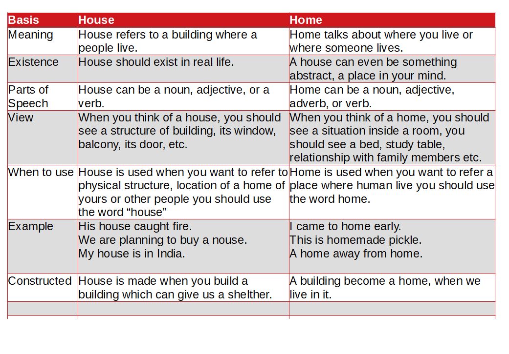

The main difference between house and home is House refers to a building where a people live whereas Home talks about where you live or where someone lives. A home can even be something abstract, a place in your mind. When you say, “Let’s go home,” you are probably not talking simply about going to the physical structure where you live. You are talking about being in the special place where you feel most comfortable and that belongs to you.
House
A House is a building for human habitation, especially one that consists of a ground floor and one or more upper storeys. House is made when you build a building which can give us a shelther.
Home
Homes are not merely practical as a place of shelter but also have a symbolic function in terms of the way we want to display our identies and convey meaning. Homes are more than simple bricks and mortar. HOme occupies a space in which we imbune our feelings and aspirations in relation to self-identity and also in relation to others and the environment. Home not only comprises a sense of place but also a broad set of feelings.
| Basis | House | Home |
| Meaning | House refers to a building where a people live. | Home talks about where you live or where someone lives. |
| Existence | House should exist in real life. | A house can even be something abstract, a place in your mind. |
| Parts of Speech | House can be a noun, adjective, or a verb. | Home can be a noun, adjective, adverb, or verb. |
| View | When you think of a house, you should see a structure of building, its window, balcony, its door, etc. | When you think of a home, you should see a situation inside a room, you should see a bed, study table, relationship with family members etc. |
| When to use | House is used when you want to refer to physical structure, location of a home of yours or other people you should use the word “house” | Home is used when you want to refer a place where human live you should use the word home. |
| Example | His house caught fire. We are planning to buy a nouse. My house is in India. |
I came to home early. This is homemade pickle. A home away from home. |
| Constructed | House is made when you build a building which can give us a shelther. | A building become a home, when we live in it. |
What is a house?
It’s brick and stone
and wood that’s hard.
Some window glass
and perhaps a yard.
It’s eaves and chimneys
and tile floors
and stucco and roof
and lots of doors.
What is a Home?
It’s loving and family
and doing for others.
It’s brothers and sisters
and fathers and mothers.
It’s unselfish acts
and kindly sharing
and showing your loved ones
you’re always caring.”
Poem Written by Lorraine Michael